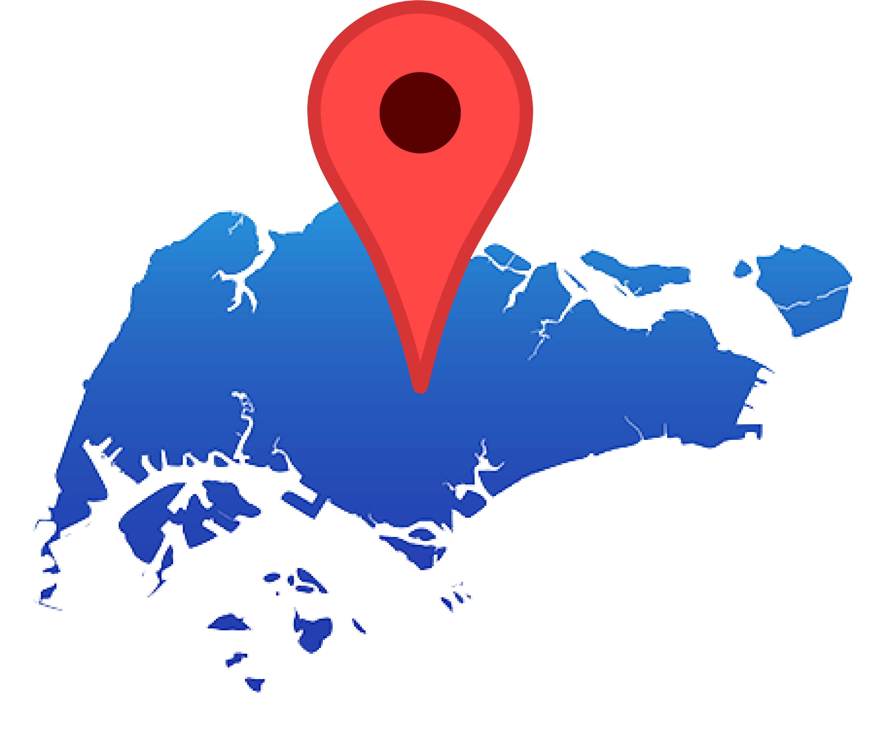

Singapore is a tiny country/city. This collection explores 100 roads and how google maps decided to pin a specific direction or spot of the road that would essentially represent the whole road. With this game, learn to identify the roads by its pin location and memorize their names. Explore Singapore through the roads.
